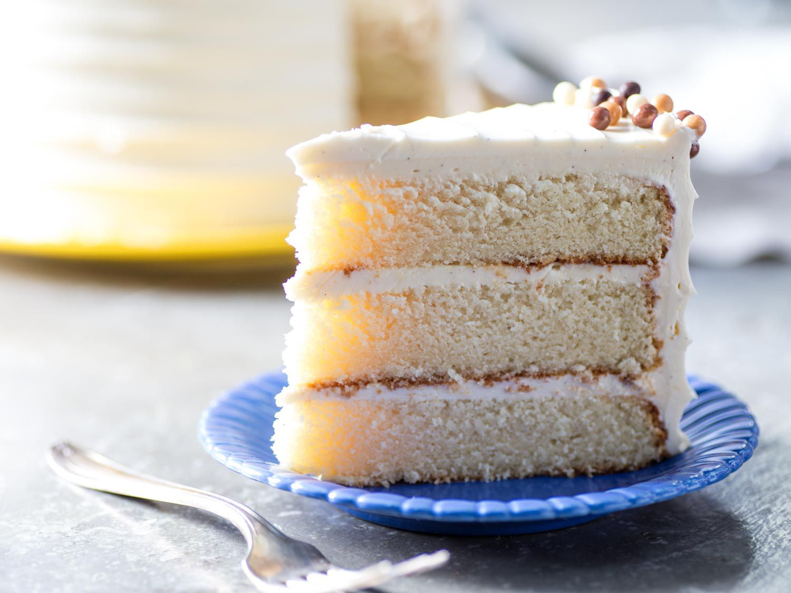

Vanilla Sponge Cake
A light and fluffy classic perfect for birthdays or tea-time treats.
Ingredients
- 1½ cups all-purpose flour
- 1 cup sugar
- ½ cup unsalted butter
- 2 tsp baking powder
- 3 eggs
- 1 tsp vanilla extract
- ½ cup milk
Instructions
- Preheat oven to 350°F (175°C). Grease a 9-inch round pan.
- Cream butter and sugar until fluffy, then add eggs one at a time.
- Stir in vanilla, then mix flour and baking powder.
- Add milk gradually and beat until smooth.
- Bake for 30–35 minutes or until golden brown.
Nutritional Info
Calories: 250 | Protein: 5g | Carbs: 32g | Fat: 11g
Allergens
Contains eggs, milk, and wheat.

Baking Tips
- Use ingredients at room temperature for even mixing.
- Don’t overmix—stop when the batter looks smooth.
- Always preheat the oven for consistent results.